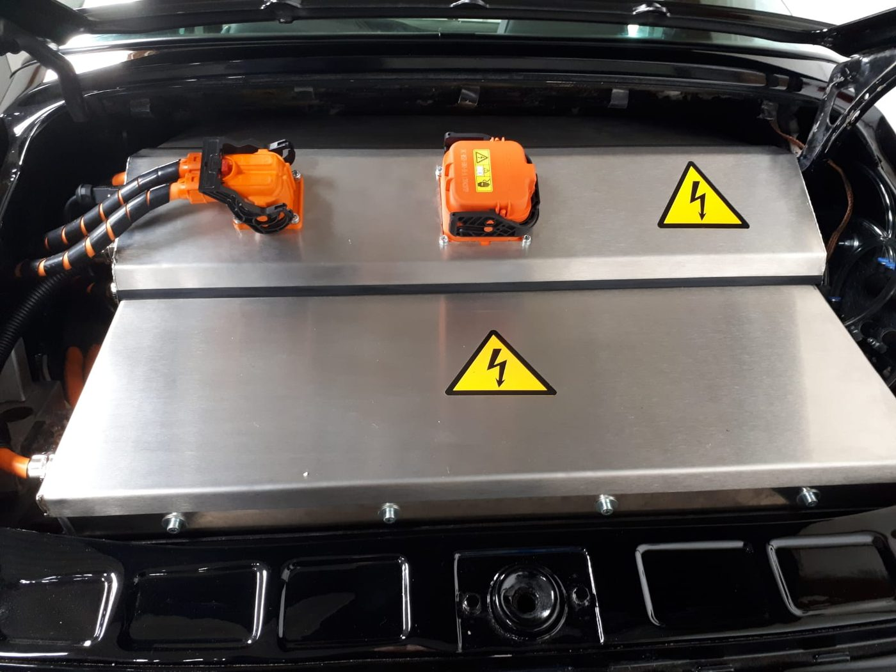
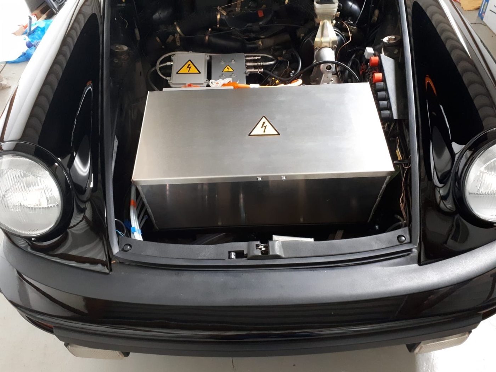
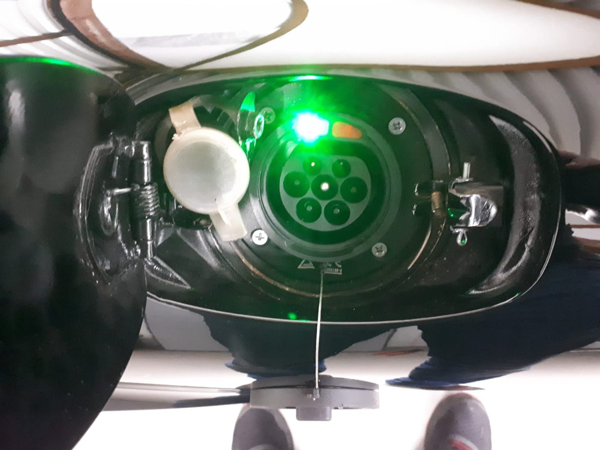
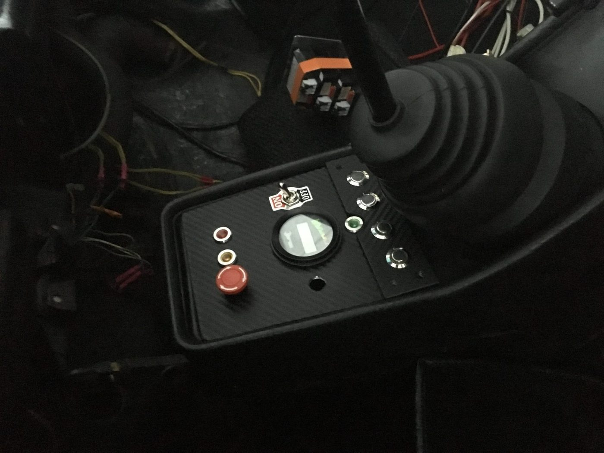

Porsche 911 Targa auf ElektroantriebPorsche 911 Targa converted to electric
Ein Wagen ohne Motor, ein zerlegter Tesla und zwei Jahre Werkstatt. A car without an engine, a dismantled Tesla, and two years in a workshop.
- BatterieBattery pack
- 7 Module · 175 V · rund 37 kWh7 modules · 175 V · about 37 kWh
- ReichweiteRange
- rund 200 km · 180 km/h Spitzeabout 200 km · 180 km/h top speed
- MehrgewichtAdded weight
- rund 50 kg gegenüber dem Originalabout 50 kg over the original car
- ZeitraumDuration
- zwei Jahre, eigene Werkstatttwo years, our own workshop
Am Anfang stand ein schwarzer Porsche 911 Targa von 1981 ohne Motor. Zusammen mit Marc Zemelka und seinem Vater habe ich ihn ab 2017 auf Elektroantrieb umgebaut, in einer kleinen Werkstatt in Darmstadt, die wir unter dem Namen Z-Motors betrieben haben. Ich habe damals Mechatronik studiert, und das hier war der Teil des Studiums, der nicht im Hörsaal stattfand. Vor dem ersten Handgriff lagen Monate, in denen wir gerechnet, gezeichnet und wieder verworfen haben.
It started with a black 1981 Porsche 911 Targa with no engine. From 2017 onwards I converted it to electric drive together with Marc Zemelka and his father, in a small workshop in Darmstadt that we ran under the name Z-Motors. I was studying mechatronics at the time, and this was the part of the degree that did not happen in a lecture hall. Before the first bolt was turned, months went into calculating, drawing and discarding.

Den Antrieb liefern sieben Lithium-Ionen-Module aus einem zerlegten Tesla, zusammen 175 Volt und rund 37 Kilowattstunden. Sie sitzen vorn im Kofferraum und hinten im früheren Motorraum, und zwar nicht dort, wo Platz war, sondern dort, wo die Gewichtsverteilung des Originals erhalten bleibt. Bei einem 911 mit seinem Heckmotor ist das keine Feinheit, sondern der Grund, warum sich der Wagen so fährt, wie er sich fährt. Ein paar Kilogramm an der falschen Stelle hätte man in der ersten Kurve gemerkt.
Seven lithium-ion modules from a dismantled Tesla provide the drive, 175 volts and roughly 37 kilowatt hours in total. They sit in the front trunk and in the former engine bay, placed not where there was room but where the original weight distribution is preserved. On a rear-engined 911 that is not a detail; it is the reason the car drives the way it does. A few kilograms in the wrong place would have shown up in the first corner.

Die Gehäuse dafür haben wir in CAD entworfen und an Modellen geprüft, bevor wir sie gebaut haben. Blech ist geduldiger als Software, aber auch teurer: Ein Gehäuse, das zwei Millimeter zu groß ist, merkt man erst beim Einbau, und dann fängt man von vorn an. Das ist derselbe Gedanke, den ich heute in Software verfolge — lieber vorher prüfen, ob eine Annahme trägt, als hinterher zu reparieren.
We designed the housings in CAD and checked them against physical models before building them. Sheet metal is more patient than software, but also more expensive: a housing two millimetres too large only shows up during installation, and then you start again. It is the same idea I follow in software today — check whether an assumption holds before you build on it, rather than repairing afterwards.

Das Ladegerät sitzt fest im Wagen, und geladen wird an einer gewöhnlichen Steckdose in der Garage. Das war uns wichtiger als eine kurze Ladezeit: Ein Auto, für das man erst eine Wallbox braucht, steht am Ende öfter herum. Rund 200 Kilometer kommen so zusammen, die Höchstgeschwindigkeit liegt bei 180.
The charger is built into the car, and it charges from an ordinary socket in the garage. That mattered more to us than a short charging time: a car that first needs a wallbox ends up standing still more often. The result is a range of about 200 kilometres and a top speed of 180.

Innen sieht man dem Wagen den Umbau kaum an. Getriebe, Schalthebel und Konsole sind original geblieben, man schaltet also weiter von Hand. Am Ende wog der fertige Wagen rund 50 Kilogramm mehr als vorher — bei einem Umbau dieser Art eine Zahl, auf die man stolz sein darf. Und er fährt sich immer noch wie ein 911, nur leise.
From the inside you barely notice the conversion. Transmission, gear lever and console stayed original, so you still shift by hand. The finished car ended up about 50 kilograms heavier than before — for a conversion like this, a number worth being proud of. And it still drives like a 911, only quietly.